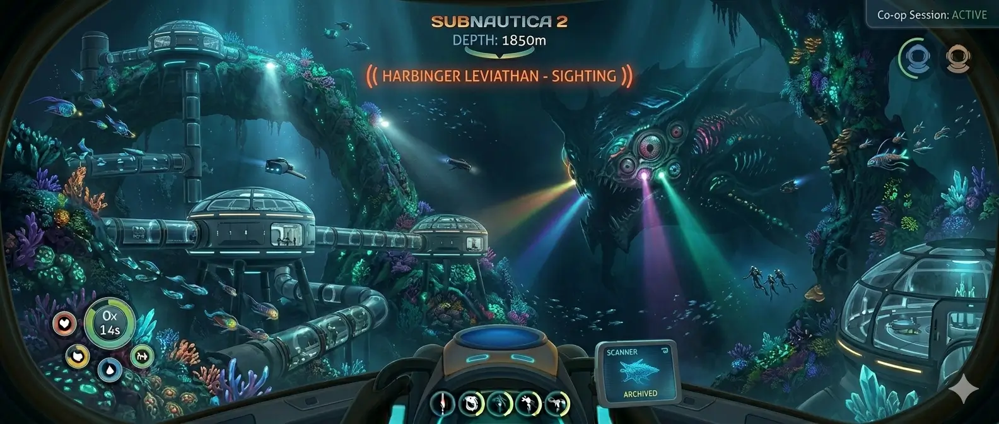
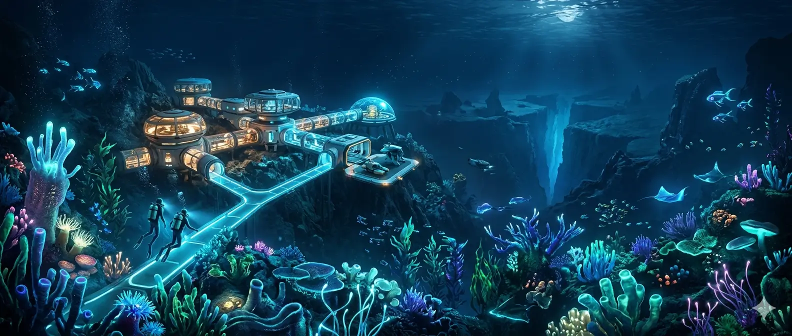
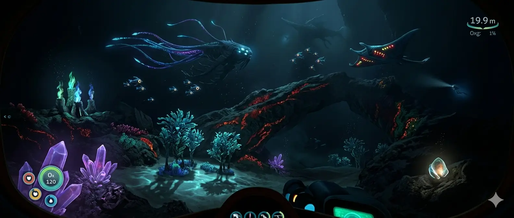
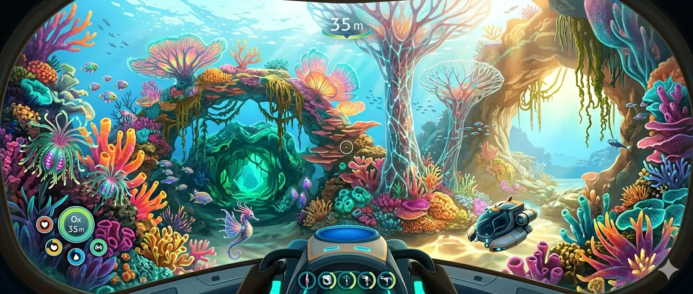
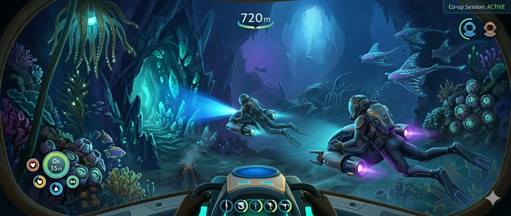
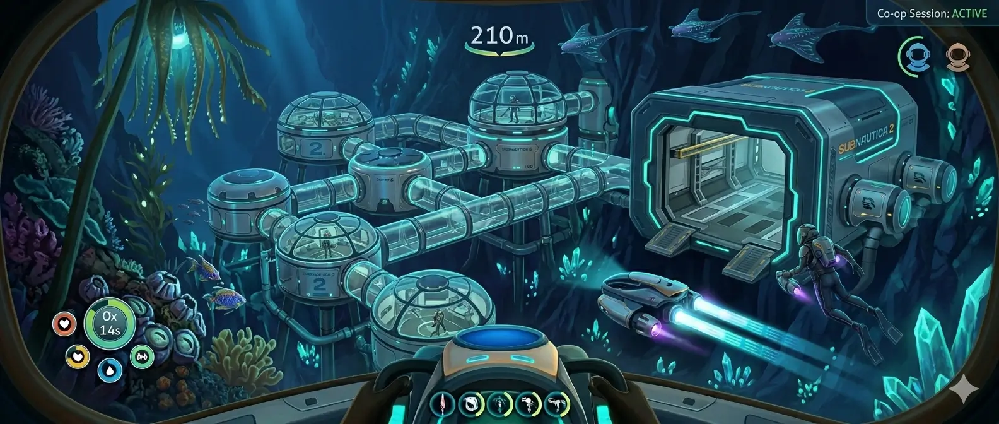
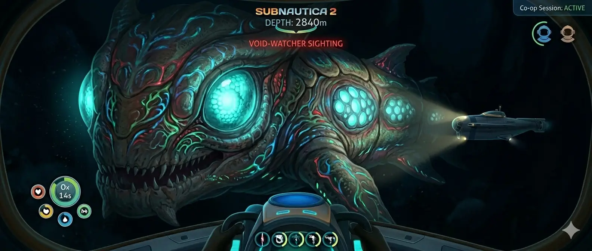
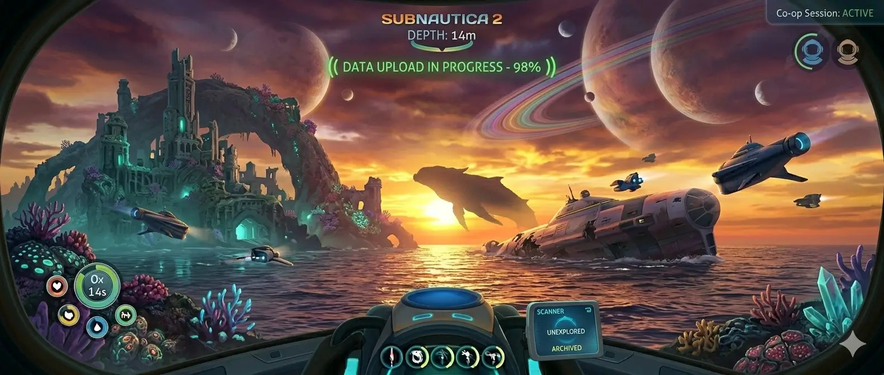

Subnautica 2 — нове покоління підводного виживання
Що таке Subnautica 2
Subnautica 2 — це нова частина популярної серії survival-adventure ігор від студії Unknown Worlds Entertainment. Гра продовжує концепцію дослідження інопланетного океану, де гравцю необхідно виживати, збирати ресурси, будувати бази та відкривати таємниці підводного світу.
На відміну від попередніх частин, новий проєкт створюється з акцентом на:
- кооперативний режим;
- масштабніший відкритий світ;
- сучасну графіку на Unreal Engine 5;
- покращену систему дослідження;
- глибшу взаємодію з екосистемою.

Чому серія стала культовою
Subnautica отримала популярність завдяки унікальному поєднанню:
- Виживання.
- Дослідження океану.
- Наукової фантастики.
- Атмосфери самотності.
- Психологічного страху перед невідомим.
На відміну від більшості survival-ігор, серія майже не робить ставку на бойову систему. Основний акцент — це занурення у невідомий світ.
Основні особливості серії
Атмосфера
Гравець постійно відчуває:
- небезпеку;
- обмеженість ресурсів;
- страх перед глибиною;
- цікавість до дослідження.
Дослідження
Кожен новий біом відкриває:
- унікальні ресурси;
- нові форми життя;
- фрагменти технологій;
- сюжетні підказки.

Новий світ та біоми
Розробники обіцяють повністю нову планету з різноманітними екосистемами.
Очікувані типи біомів
| Біом | Особливість |
|---|---|
| Коралові рифи | Безпечна стартова зона |
| Льодові печери | Низька температура |
| Вулканічні зони | Висока небезпека |
| Безодні | Найнебезпечніші істоти |
| Світні печери | Рідкісні ресурси |
Що покращать у світі гри
- більшу вертикальність;
- реалістичні течії;
- динамічну погоду;
- зміну освітлення;
- живішу екосистему.
Основні цілі дослідження
- Пошук ресурсів.
- Сканування технологій.
- Вивчення флори та фауни.
- Відкриття сюжетних локацій.
- Виживання у глибоких зонах.

Кооперативний режим
Одним із головних нововведень стане офіційний мультиплеєр.
Раніше фанати використовували неофіційні модифікації для гри з друзями, але тепер кооператив буде частиною основного геймплею.
Що можна буде робити разом
- будувати бази;
- збирати ресурси;
- досліджувати глибини;
- керувати транспортом;
- організовувати експедиції.
Переваги кооперативу
- Швидше дослідження світу.
- Командне виживання.
- Розподіл ресурсів.
- Спільне будівництво.
- Більше тактичних можливостей.

Будівництво та технології
Система будівництва стане значно масштабнішою.
Очікувані нові можливості
- великі модульні бази;
- автоматизація виробництва;
- мобільні станції;
- енергетичні системи;
- дрони для збору ресурсів.
Можливі транспортні засоби
| Транспорт | Призначення |
|---|---|
| Міні-субмарина | Дослідження мілководдя |
| Велика субмарина | Далекі експедиції |
| Підводний костюм | Робота на глибині |
| Дрон | Розвідка території |
Етапи розвитку бази
- Побудова стартового укриття.
- Встановлення генераторів.
- Створення складів.
- Виробництво транспорту.
- Розширення комплексу.

Нові істоти та небезпеки
Subnautica відома своїми гігантськими морськими створіннями.
Яких істот очікують гравці
- хижаків глибоководдя;
- електричних істот;
- паразитичних організмів;
- гігантських левіафанів;
- мирну екзотичну фауну.
Основні небезпеки
- Нестача кисню.
- Велика глибина.
- Агресивні істоти.
- Темрява.
- Обмежені ресурси.
Основні психологічні тригери
-
Темрява
- погана видимість;
- невідомі звуки;
- приховані істоти.
-
Глибина
- нестача кисню;
- високий тиск;
- складність навігації.
-
Самотність
- відсутність NPC;
- ізоляція;
- небезпека втрати ресурсів.
Страх у грі створюється не скрімерами, а:
- невідомістю;
- звуками океану;
- поганою видимістю;
- величезними глибинами;
- відчуттям самотності.
Саме поєднання темряви, невідомості та звуків океану формує унікальну атмосферу серії Subnautica.

Що очікують фанати
Фанати серії мають високі очікування від продовження.
Найбажаніші покращення
- стабільний мультиплеєр;
- більший відкритий світ;
- глибший сюжет;
- покращена оптимізація;
- підтримка модів;
- реалістичніша фізика води.
Що важливо не втратити
- Атмосферу дослідження.
- Відчуття небезпеки.
- Баланс між страхом і цікавістю.
- Самобутній стиль серії.
- Якісний environmental storytelling.

Підсумок
Subnautica 2 має всі шанси стати одним із найкращих survival-проєктів нового покоління. Розробники прагнуть зберегти атмосферу оригіналу та одночасно значно розширити можливості гри.
Головні переваги майбутньої гри:
- масштабний підводний світ;
- кооперативний режим;
- сучасна графіка;
- нові технології;
- глибоке дослідження океану.
Для фанатів survival та наукової фантастики це одна з найочікуваніших ігор найближчих років.
